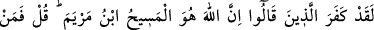
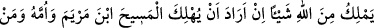
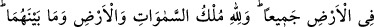
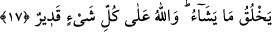

Cevherinin şerefi hakkında şu kâfîdir:
Kaderi yazan, Senin kıdem ikliminden geçip geldiğin günde
İlk olarak senin bu dünyaya inme hükmünü yazmıştır.
Yoksa kalemi tekrar yontmak abes olur.
Ömer b. Hattab (r.a.)’dan rivâyet edildiğine göre Rasûlullah (s.a.v.) şöyle
buyurmuştur: “Âdem (a.s.) hatâsını itiraf ettiğinde “Yâ Rabbi! Muhammed hakkı için
beni bağışlamanı istiyorum.” dedi. Allah Teâlâ:
“Ey Âdem!, Muhammed’i nasıl tanıyorsun? Daha onu yaratmadım ki.” buyurdu.
Âdem (a.s.) da
“Çünkü sen beni kudretinle yaratıp da rûhundan bana üflediğinde başımı yukarı
kaldırdım ve arşın ayaklarında “Lâ ilâhe illallah, Muhammedün Rasûlullah” yazılı
olduğunu gördüm. Sen’in ancak en sevdiğin kişinin ismini kendi isminle birlikte
zikredeceğini anladım.” diye cevapladı. Bunun üzerine Allah Teâlâ:
“Doğru söyledin, ey Âdem. Şüphesiz ki o, mahlûkatın içerisinde en sevdiğimdir.
Seni bağışladım. Eğer Muhammed olmasaydı seni yaratmazdım.” buyurdu.[290]
17- «Şüphesiz Allah, Meryem oğlu Mesîh’tir.» diyenler andolsun ki kâfir
olmuşlardır. De ki: “Öyleyse Allah, Meryem oğlu Mesîh’i, annesini ve
yeryüzündekilerin hepsini helâk etmek istese Allah’a karşı kimin elinde bir şey
var? Göklerde, yerde ve ikisi arasında ne varsa hepsinin mülkiyeti Allah’a aittir. O,
dilediğini yaratır ve Allah her şeye tam mânâsıyle kadirdir.
“Şüphesiz Allah, Meryem oğlu Mesih’tir.” diyenler andolsun ki kâfir olmuşlardır.”
Bu âyet, Necran hristiyanları hakkında inmiştir. Onlar Allah’ın bazan muayyen bir insan
bedenine veya rûhuna hulul ettiğini söyleyen Yakûbîlerdir.
Ey Muhammed onları azarlamak için “De ki:” (Allah’tan) yani O’nun kudreti ve
iradesinden (bir şeye karşı) onun gerçekliğine karşı kim O’na engel olabilir?
“Öyleyse” iş sizin iddiâ ettiğiniz gibiyse “Allah, Meryem oğlu Mesih’i, annesini ve
yeryüzündekilerin hepsini helâk etmek istese.” Bu ifadeler onların sözlerinin boş
olduğunu isbatlamak için getirilmiştir. Şöyle ki; Mesih de diğer mümkün varlıklar gibi
kadere boyun eğen, kendisi hakkında hüküm verilen fânî bir varlık olduğuna göre, böyle